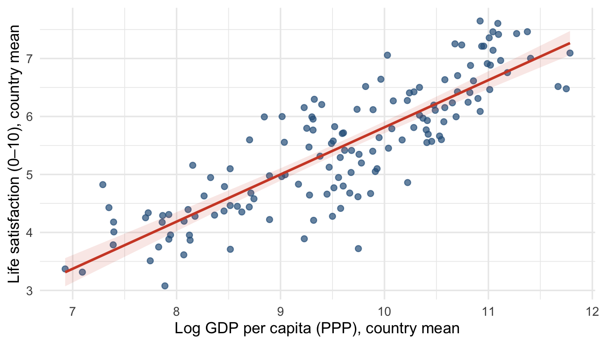
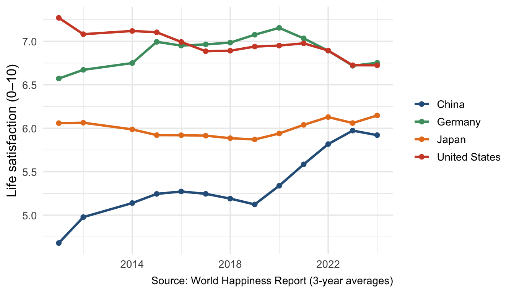
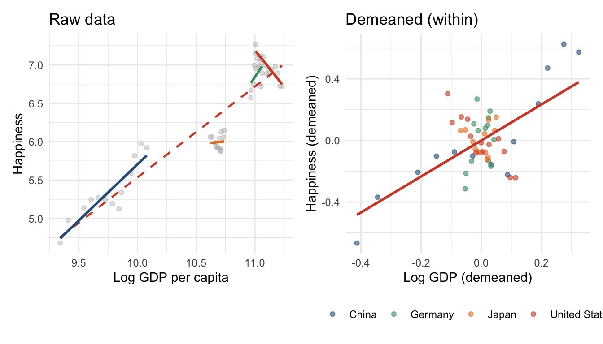

Code
library(tidyverse)
library(fixest)
library(modelsummary)
library(flextable)
library(patchwork)Claudius Gräbner-Radkowitsch
June 16, 2026
June 16, 2026
Cross-sectional regression can tell us that richer countries are happier than poorer ones. But this comparison confounds income with every other stable characteristic that distinguishes rich countries from poor ones — culture, institutions, history, geography. Panel data — observations on the same units at multiple points in time — allow us to separate these stable background differences from the variation we actually care about.
Fixed effects (FE) estimation exploits the within-unit variation: when a country’s income rises above its own historical average, does its happiness rise too? By asking this question for each unit separately and averaging, FE eliminates all stable unit-level characteristics as potential confounders — observed or unobserved.
Does rising income make countries happier — and what would it take to interpret that relationship causally?
This question has a clear cross-sectional answer (yes, richer countries are happier) but a much less clear within-country answer — the Easterlin paradox. Panel methods let us be precise about which comparison we are making.
We use a country-level panel merging three sources: the World Happiness Report, World Bank WDI, and SWIID.
happiness_income.csv is a composite dataset prepared for this tutorial, merging the World Happiness Report, World Bank WDI, and SWIID. It is co-located with this resource at resources/r-programming/data/happiness_income.csv in the Methods Hub repository. Place it in a data/ subfolder next to this file before running the code.
Rows: 1,729
Columns: 10
$ country <chr> "Afghanistan", "Afghanistan", "Afghanistan", "Afghanistan…
$ iso2c <chr> "AF", "AF", "AF", "AF", "AF", "AF", "AF", "AF", "AF", "AF…
$ iso3c <chr> "AFG", "AFG", "AFG", "AFG", "AFG", "AFG", "AFG", "AFG", "…
$ year <dbl> 2011, 2012, 2014, 2015, 2016, 2017, 2018, 2019, 2020, 202…
$ GDP_ppp <dbl> 80913174278, 91231454558, 98965950295, 100402257641, 1026…
$ population <dbl> 29347708, 30560034, 32792523, 33831764, 34700612, 3568893…
$ unemployment <dbl> 7.830, 7.875, 7.915, 9.032, 10.116, 11.184, 11.192, 11.18…
$ GDP_pc <dbl> 2757.053, 2985.319, 3017.943, 2967.692, 2958.785, 2952.99…
$ happiness <dbl> 4.2580, 4.0400, 3.5750, 3.3600, 3.7940, 3.6320, 3.2030, 2…
$ gini_disp <dbl> 31.7, 31.8, 31.9, 31.9, 31.9, 31.9, NA, NA, NA, NA, NA, N…| Variable | Source | Description |
|---|---|---|
happiness |
World Happiness Report 2026 | Life satisfaction (0–10, 3-year average) |
GDP_pc |
World Bank WDI | GDP per capita, PPP (constant 2017 int’l $) |
gini_disp |
SWIID 9.2 | Disposable income Gini coefficient |
unemployment |
World Bank WDI | Unemployment rate (% of labour force) |
n_countries | n_years | year_min | year_max | n_obs |
|---|---|---|---|---|
144 | 13 | 2,011 | 2,024 | 1,729 |
The panel is unbalanced — not every country appears in every year. This is typical for survey-based cross-country data and causes no problems for fixed effects estimation.
dat |>
group_by(country) |>
summarise(
happiness = mean(happiness, na.rm = TRUE),
log_gdp = mean(log(GDP_pc), na.rm = TRUE),
.groups = "drop"
) |>
filter(!is.na(happiness), !is.na(log_gdp)) |>
ggplot(aes(log_gdp, happiness)) +
geom_point(colour = "#2C5F8A", alpha = 0.7, size = 2) +
geom_smooth(method = "lm", colour = "#D04A2F", se = TRUE,
fill = "#D04A2F", alpha = 0.12, linewidth = 1) +
labs(
x = "Log GDP per capita (PPP), country mean",
y = "Life satisfaction (0–10), country mean"
) +
theme_minimal(base_size = 13)
The cross-sectional correlation is strong. But is this evidence that income causes happiness?
highlight <- c("United States", "Japan", "South Korea", "China", "Germany")
col_hl <- c(
"United States" = "#D04A2F",
"Japan" = "#e67e22",
"South Korea" = "#8e44ad",
"China" = "#2C5F8A",
"Germany" = "#4A9B6F"
)
dat |>
filter(country %in% highlight, !is.na(happiness)) |>
ggplot(aes(year, happiness, colour = country)) +
geom_line(linewidth = 1.1) +
geom_point(size = 1.8) +
scale_colour_manual(values = col_hl, name = NULL) +
scale_x_continuous(breaks = seq(2006, 2024, by = 4)) +
labs(x = NULL, y = "Life satisfaction (0–10)",
caption = "Source: World Happiness Report (3-year averages)") +
theme_minimal(base_size = 13)
China’s GDP per capita roughly quadrupled over this period. Its happiness score rose only modestly. The United States had strong aggregate growth — yet happiness has trended flat or downward. This is the Easterlin paradox in real data.
Pooled OLS ignores panel structure entirely:
The large positive coefficient reflects the strong cross-sectional pattern — but it conflates between-country differences (richer country = happier country) with within-country change (rising income → rising happiness).
The pooled OLS error \(\epsilon_{it}\) has two components:
\[\epsilon_{it} = \eta_i + v_{it}\]
If \(\eta_i\) correlates with \(\log(\text{GDP}_{it})\) — which it clearly does, since institutional quality produces both high income and high happiness — pooled OLS is biased. This is omitted variable bias with an unobservable variable.
Country FE eliminates \(\eta_i\) by subtracting each country’s time-mean from every variable:
\[\tilde{y}_{it} = y_{it} - \bar{y}_i \qquad \tilde{x}_{it} = x_{it} - \bar{x}_i\]
Because \(\eta_i - \bar{\eta}_i = 0\), the stable country component drops out entirely. The coefficient is now identified from within-country variation only.
In fixest, add fixed effects with |:
vcov = ~country clusters standard errors at the country level. For panel data, clustering at the unit level is standard practice — it accounts for the serial correlation of errors within units.
Country FE removes stable country differences. But what about shocks that hit all countries in the same year — a global recession, a pandemic? Two-way FE adds a year fixed effect:
\[y_{it} = \alpha_i + \gamma_t + \beta \log(\text{GDP}_{it}) + v_{it}\]
\(\hat\beta\) is now identified from variation that is neither explained by which country nor which year:
To build intuition, let us manually demean data for selected countries:
within_dat <- dat |>
filter(country %in% highlight) |>
group_by(country) |>
mutate(
happiness_dm = happiness - mean(happiness, na.rm = TRUE),
log_gdp_dm = log(GDP_pc) - mean(log(GDP_pc), na.rm = TRUE)
) |>
ungroup()
p_raw <- dat |>
filter(country %in% highlight) |>
ggplot(aes(log(GDP_pc), happiness)) +
geom_point(colour = "grey70", alpha = 0.4, size = 1.5) +
geom_smooth(method = "lm", colour = "#D04A2F", se = FALSE, linewidth = 0.8, linetype = "dashed") +
geom_smooth(aes(colour = country), method = "lm", se = FALSE, linewidth = 1) +
scale_colour_manual(values = col_hl, guide = "none") +
labs(x = "Log GDP per capita", y = "Happiness", title = "Raw data") +
theme_minimal(base_size = 11)
p_demeaned <- within_dat |>
ggplot(aes(log_gdp_dm, happiness_dm)) +
geom_point(aes(colour = country), alpha = 0.6, size = 1.5) +
geom_smooth(method = "lm", colour = "#D04A2F", se = FALSE, linewidth = 1) +
scale_colour_manual(values = col_hl, name = NULL) +
labs(x = "Log GDP (demeaned)", y = "Happiness (demeaned)", title = "Demeaned (within)") +
theme_minimal(base_size = 11) +
theme(legend.position = "bottom")
p_raw + p_demeaned
The between-country slope (dashed, left) is steep. The within-country slope (right) is flatter — in some countries barely positive.
modelsummary(
list("Pooled OLS" = m0, "Country FE" = m1, "Two-way FE" = m2),
coef_map = c("log(GDP_pc)" = "Log GDP per capita"),
statistic = "conf.int", conf_level = 0.95,
gof_map = c("nobs", "r.squared", "r2.within"),
stars = TRUE,
notes = "95% CIs in brackets. Pooled OLS: HC1 SEs. FE models: clustered at country level.",
output = "flextable"
) |> autofit()
| Pooled OLS | Country FE | Two-way FE |
|---|---|---|---|
Log GDP per capita | 0.813*** | 1.259*** | 1.554*** |
[0.786, 0.840] | [0.829, 1.688] | [0.943, 2.164] | |
Num.Obs. | 1729 | 1727 | 1727 |
R2 | 0.672 | 0.928 | 0.930 |
R2 Within | 0.150 | 0.142 | |
+ p < 0.1, * p < 0.05, ** p < 0.01, *** p < 0.001 | |||
95% CIs in brackets. Pooled OLS: HC1 SEs. FE models: clustered at country level. | |||
Reading the progression:
Country FE already controls for all time-invariant country characteristics: stable institutions, culture, geography, social trust, historical development path. Year FE controls for global shocks in a given year.
What FE cannot control for: time-varying factors that change differently across countries and affect both income and happiness. Two obvious candidates: income inequality and unemployment.
FE eliminates time-invariant confounders. It does not solve:
gini_disp and unemployment above) is the right approach.The FE estimate should be understood as: “When a country’s income rises above its own historical average, controlling for global year shocks, does its happiness tend to rise?” — not as a clean causal effect.
Five rules for panel regression tables:
statistic = "conf.int" in modelsummaryr2.within in gof_map; the overall R² is inflated by the fixed effectsmodelsummary(
list(
"(1) Pooled OLS" = m0,
"(2) Country FE" = m1,
"(3) Two-way FE" = m2,
"(4) + Controls" = m3
),
coef_map = c(
"log(GDP_pc)" = "Log GDP per capita",
"gini_disp" = "Gini coefficient",
"unemployment" = "Unemployment rate"
),
statistic = "conf.int", conf_level = 0.95,
gof_map = c("nobs", "r.squared", "r2.within"),
stars = TRUE,
notes = c(
"95% CIs in brackets.",
"Column (1): HC1 standard errors.",
"Columns (2)–(4): clustered at country level.",
"Country and year fixed effects in columns (3) and (4)."
),
output = "flextable"
) |> autofit()
| (1) Pooled OLS | (2) Country FE | (3) Two-way FE | (4) + Controls |
|---|---|---|---|---|
Log GDP per capita | 0.813*** | 1.259*** | 1.554*** | 1.376*** |
[0.786, 0.840] | [0.829, 1.688] | [0.943, 2.164] | [0.666, 2.086] | |
Gini coefficient | -0.026 | |||
[-0.059, 0.008] | ||||
Unemployment rate | -0.036*** | |||
[-0.055, -0.017] | ||||
Num.Obs. | 1729 | 1727 | 1727 | 1297 |
R2 | 0.672 | 0.928 | 0.930 | 0.945 |
R2 Within | 0.150 | 0.142 | 0.194 | |
+ p < 0.1, * p < 0.05, ** p < 0.01, *** p < 0.001 | ||||
95% CIs in brackets. | ||||
Column (1): HC1 standard errors. | ||||
Columns (2)–(4): clustered at country level. | ||||
Country and year fixed effects in columns (3) and (4). | ||||
| country in feols) eliminates all time-invariant unit-level confounders| country + year) additionally removes year-specific global shocks@misc{gräbner-radkowitsch2026,
author = {Gräbner-Radkowitsch, Claudius},
editor = {Gräbner-Radkowitsch, Claudius},
title = {Panel {Data} and {Fixed} {Effects} in {R}},
date = {2026-06-16},
url = {https://euf-methodology-hub.netlify.app/resources/r-programming/panel-data-fixed-effects},
langid = {en}
}
---
title: "Panel Data and Fixed Effects in R"
description: "Understand the logic of panel data, learn to distinguish within- from between-unit variation, estimate fixed effects models with fixest, and connect the FE identification argument to causal reasoning."
author: "Claudius Gräbner-Radkowitsch"
date: 2026-06-16
date-modified: 2026-06-16
image: ../../assets/images/r-programming.png
learning-objectives:
- "Describe the structure of panel data (N units × T periods) and distinguish within- from between-unit variation"
- "Explain why pooled OLS is biased when unobserved unit characteristics correlate with the predictor"
- "Estimate unit and two-way fixed effects models using `fixest::feols()` with clustered standard errors"
- "Interpret the within-R² and explain why it is the appropriate fit statistic for fixed effects models"
categories:
- R
- regression
- statistics
- causal-inference
- MA
- tutorial
level:
- MA
content-type: tutorial
citation:
type: entry
container-title: "Methods Hub"
title: "Panel Data and Fixed Effects in R"
editor:
- name: "Claudius Gräbner-Radkowitsch"
url: https://euf-methodology-hub.netlify.app/resources/r-programming/panel-data-fixed-effects
---
# Introduction
Cross-sectional regression can tell us that richer countries are happier than poorer ones. But this comparison confounds income with every other stable characteristic that distinguishes rich countries from poor ones — culture, institutions, history, geography. **Panel data** — observations on the same units at multiple points in time — allow us to separate these stable background differences from the variation we actually care about.
**Fixed effects (FE) estimation** exploits the within-unit variation: when a country's income rises above its own historical average, does its happiness rise too? By asking this question for each unit separately and averaging, FE eliminates all stable unit-level characteristics as potential confounders — observed or unobserved.
## Research question
> *Does rising income make countries happier — and what would it take to interpret that relationship causally?*
This question has a clear cross-sectional answer (yes, richer countries are happier) but a much less clear within-country answer — the Easterlin paradox. Panel methods let us be precise about which comparison we are making.
## Data and packages
We use a country-level panel merging three sources: the World Happiness Report, World Bank WDI, and SWIID.
::: {.callout-note}
## Getting the data
`happiness_income.csv` is a composite dataset prepared for this tutorial, merging the World Happiness Report, World Bank WDI, and SWIID. It is co-located with this resource at `resources/r-programming/data/happiness_income.csv` in the Methods Hub repository. Place it in a `data/` subfolder next to this file before running the code.
:::
```{r}
#| label: setup
#| message: false
library(tidyverse)
library(fixest)
library(modelsummary)
library(flextable)
library(patchwork)
```
```{r}
#| label: load-data
#| message: false
dat <- read_csv("data/happiness_income.csv", show_col_types = FALSE) |>
filter(!is.na(happiness), !is.na(GDP_pc))
glimpse(dat)
```
| Variable | Source | Description |
|---|---|---|
| `happiness` | World Happiness Report 2026 | Life satisfaction (0–10, 3-year average) |
| `GDP_pc` | World Bank WDI | GDP per capita, PPP (constant 2017 int'l $) |
| `gini_disp` | SWIID 9.2 | Disposable income Gini coefficient |
| `unemployment` | World Bank WDI | Unemployment rate (% of labour force) |
# Exploring the Data
## Panel structure
```{r}
#| label: panel-structure
dat |>
summarise(
n_countries = n_distinct(country),
n_years = n_distinct(year),
year_min = min(year),
year_max = max(year),
n_obs = n()
) |>
flextable() |> theme_vanilla() |> autofit()
```
The panel is **unbalanced** — not every country appears in every year. This is typical for survey-based cross-country data and causes no problems for fixed effects estimation.
## The cross-sectional pattern
```{r}
#| label: fig-cross-section
#| fig-cap: "Average happiness and log GDP per capita by country (full-period means). Richer countries are clearly happier in cross-section."
#| fig-height: 4
dat |>
group_by(country) |>
summarise(
happiness = mean(happiness, na.rm = TRUE),
log_gdp = mean(log(GDP_pc), na.rm = TRUE),
.groups = "drop"
) |>
filter(!is.na(happiness), !is.na(log_gdp)) |>
ggplot(aes(log_gdp, happiness)) +
geom_point(colour = "#2C5F8A", alpha = 0.7, size = 2) +
geom_smooth(method = "lm", colour = "#D04A2F", se = TRUE,
fill = "#D04A2F", alpha = 0.12, linewidth = 1) +
labs(
x = "Log GDP per capita (PPP), country mean",
y = "Life satisfaction (0–10), country mean"
) +
theme_minimal(base_size = 13)
```
The cross-sectional correlation is strong. But is this evidence that income *causes* happiness?
## Within-country trends: the Easterlin challenge
```{r}
#| label: fig-within-trends
#| fig-cap: "Happiness over time for selected countries. GDP per capita rose in all of them — but happiness trends diverge."
#| fig-height: 4
#| message: false
highlight <- c("United States", "Japan", "South Korea", "China", "Germany")
col_hl <- c(
"United States" = "#D04A2F",
"Japan" = "#e67e22",
"South Korea" = "#8e44ad",
"China" = "#2C5F8A",
"Germany" = "#4A9B6F"
)
dat |>
filter(country %in% highlight, !is.na(happiness)) |>
ggplot(aes(year, happiness, colour = country)) +
geom_line(linewidth = 1.1) +
geom_point(size = 1.8) +
scale_colour_manual(values = col_hl, name = NULL) +
scale_x_continuous(breaks = seq(2006, 2024, by = 4)) +
labs(x = NULL, y = "Life satisfaction (0–10)",
caption = "Source: World Happiness Report (3-year averages)") +
theme_minimal(base_size = 13)
```
China's GDP per capita roughly quadrupled over this period. Its happiness score rose only modestly. The United States had strong aggregate growth — yet happiness has trended flat or downward. This is the Easterlin paradox in real data.
# The Model Progression
## Step 0 — Pooled OLS: the naive baseline
Pooled OLS ignores panel structure entirely:
```{r}
#| label: model-pooled
m0 <- feols(happiness ~ log(GDP_pc), data = dat)
```
The large positive coefficient reflects the strong cross-sectional pattern — but it conflates between-country differences (richer country = happier country) with within-country change (rising income → rising happiness).
## Why pooled OLS is biased
The pooled OLS error $\epsilon_{it}$ has two components:
$$\epsilon_{it} = \eta_i + v_{it}$$
- $\eta_i$: everything stable about country $i$ that we do not observe — culture, institutions, social trust
- $v_{it}$: genuine year-to-year noise
If $\eta_i$ correlates with $\log(\text{GDP}_{it})$ — which it clearly does, since institutional quality produces both high income and high happiness — pooled OLS is biased. This is omitted variable bias with an unobservable variable.
## Step 1 — Country fixed effects
Country FE eliminates $\eta_i$ by subtracting each country's time-mean from every variable:
$$\tilde{y}_{it} = y_{it} - \bar{y}_i \qquad \tilde{x}_{it} = x_{it} - \bar{x}_i$$
Because $\eta_i - \bar{\eta}_i = 0$, the stable country component drops out entirely. The coefficient is now identified from **within-country variation only**.
In `fixest`, add fixed effects with `|`:
```{r}
#| label: model-country-fe
m1 <- feols(happiness ~ log(GDP_pc) | country,
vcov = ~country,
data = dat)
```
::: {.callout-note}
`vcov = ~country` clusters standard errors at the country level. For panel data, clustering at the unit level is standard practice — it accounts for the serial correlation of errors within units.
:::
## Step 2 — Two-way fixed effects
Country FE removes stable country differences. But what about shocks that hit all countries in the same year — a global recession, a pandemic? **Two-way FE** adds a year fixed effect:
$$y_{it} = \alpha_i + \gamma_t + \beta \log(\text{GDP}_{it}) + v_{it}$$
$\hat\beta$ is now identified from variation that is neither explained by *which country* nor *which year*:
```{r}
#| label: model-twoway-fe
m2 <- feols(happiness ~ log(GDP_pc) | country + year,
vcov = ~country,
data = dat)
```
## Visualising the within-transformation
To build intuition, let us manually demean data for selected countries:
```{r}
#| label: fig-within-slopes
#| fig-cap: "Raw data vs. demeaned data for selected countries. The between-country slope (dashed) is dominated by stable differences; within-country slopes (right panel) are what FE estimates."
#| fig-height: 4
#| message: false
within_dat <- dat |>
filter(country %in% highlight) |>
group_by(country) |>
mutate(
happiness_dm = happiness - mean(happiness, na.rm = TRUE),
log_gdp_dm = log(GDP_pc) - mean(log(GDP_pc), na.rm = TRUE)
) |>
ungroup()
p_raw <- dat |>
filter(country %in% highlight) |>
ggplot(aes(log(GDP_pc), happiness)) +
geom_point(colour = "grey70", alpha = 0.4, size = 1.5) +
geom_smooth(method = "lm", colour = "#D04A2F", se = FALSE, linewidth = 0.8, linetype = "dashed") +
geom_smooth(aes(colour = country), method = "lm", se = FALSE, linewidth = 1) +
scale_colour_manual(values = col_hl, guide = "none") +
labs(x = "Log GDP per capita", y = "Happiness", title = "Raw data") +
theme_minimal(base_size = 11)
p_demeaned <- within_dat |>
ggplot(aes(log_gdp_dm, happiness_dm)) +
geom_point(aes(colour = country), alpha = 0.6, size = 1.5) +
geom_smooth(method = "lm", colour = "#D04A2F", se = FALSE, linewidth = 1) +
scale_colour_manual(values = col_hl, name = NULL) +
labs(x = "Log GDP (demeaned)", y = "Happiness (demeaned)", title = "Demeaned (within)") +
theme_minimal(base_size = 11) +
theme(legend.position = "bottom")
p_raw + p_demeaned
```
The between-country slope (dashed, left) is steep. The within-country slope (right) is flatter — in some countries barely positive.
## Side-by-side progression
```{r}
#| label: tbl-progression
#| tbl-cap: "Income and happiness: pooled OLS, country FE, and two-way FE. 95% confidence intervals in brackets. Within-R² is the relevant fit statistic for FE models."
modelsummary(
list("Pooled OLS" = m0, "Country FE" = m1, "Two-way FE" = m2),
coef_map = c("log(GDP_pc)" = "Log GDP per capita"),
statistic = "conf.int", conf_level = 0.95,
gof_map = c("nobs", "r.squared", "r2.within"),
stars = TRUE,
notes = "95% CIs in brackets. Pooled OLS: HC1 SEs. FE models: clustered at country level.",
output = "flextable"
) |> autofit()
```
```{r}
#| include: false
b_m0 <- round(coef(m0)[["log(GDP_pc)"]], 2)
b_m1 <- round(coef(m1)[["log(GDP_pc)"]], 2)
b_m2 <- round(coef(m2)[["log(GDP_pc)"]], 2)
```
**Reading the progression:**
- **Pooled OLS → Country FE:** The coefficient *increases* from `r b_m0` to `r b_m1`. This is counterintuitive but real: the within-country income–happiness relationship is stronger than the cross-sectional comparison between countries. The cross-sectional estimate is compressed by diminishing returns at high income levels and by stable between-country happiness differences unrelated to income.
- **Country FE → Two-way FE:** The coefficient increases further to `r b_m2`. Year FE removes global shocks that simultaneously raised incomes and happiness everywhere; after removing those, the within-country signal is stronger.
- **Within-R²:** income explains a meaningful but modest share of within-country happiness variation — happiness has many determinants beyond income.
# Causal Interpretation
## What FE controls for
Country FE already controls for all time-invariant country characteristics: stable institutions, culture, geography, social trust, historical development path. Year FE controls for global shocks in a given year.
**What FE cannot control for:** time-varying factors that change *differently across countries* and affect both income and happiness. Two obvious candidates: income inequality and unemployment.
```{r}
#| label: model-with-confounders
#| message: false
m3 <- feols(happiness ~ log(GDP_pc) + gini_disp + unemployment | country + year,
vcov = ~country, data = dat)
```
## What FE cannot fix
::: {.callout-important}
## Limits of fixed effects
FE eliminates time-invariant confounders. It does **not** solve:
- **Time-varying confounders** — variables that change within units and affect both income and happiness. Adding them explicitly (as `gini_disp` and `unemployment` above) is the right approach.
- **Reverse causality** — happiness affecting income (harder to rule out with observational panel data)
- **Measurement error** in the time-varying predictor — attenuation bias is amplified in FE estimation because the within-variation signal is smaller
The FE estimate should be understood as: *"When a country's income rises above its own historical average, controlling for global year shocks, does its happiness tend to rise?"* — not as a clean causal effect.
:::
# Reporting Panel Results
**Five rules for panel regression tables:**
1. **Show the progression** — pooled OLS to your preferred specification
2. **Report CIs, not SEs** — `statistic = "conf.int"` in `modelsummary`
3. **Report which FEs are included** — in a table footnote, not as coefficient rows
4. **Report the within-R²** — `r2.within` in `gof_map`; the overall R² is inflated by the fixed effects
5. **State the clustering level** — always note it in the table footer
```{r}
#| label: tbl-final
#| tbl-cap: "Income and happiness: complete progression. Preferred specification: column (4)."
modelsummary(
list(
"(1) Pooled OLS" = m0,
"(2) Country FE" = m1,
"(3) Two-way FE" = m2,
"(4) + Controls" = m3
),
coef_map = c(
"log(GDP_pc)" = "Log GDP per capita",
"gini_disp" = "Gini coefficient",
"unemployment" = "Unemployment rate"
),
statistic = "conf.int", conf_level = 0.95,
gof_map = c("nobs", "r.squared", "r2.within"),
stars = TRUE,
notes = c(
"95% CIs in brackets.",
"Column (1): HC1 standard errors.",
"Columns (2)–(4): clustered at country level.",
"Country and year fixed effects in columns (3) and (4)."
),
output = "flextable"
) |> autofit()
```
# Summary
- **Panel data** tracks N units × T periods; within-unit variation is what fixed effects exploits
- **Pooled OLS** conflates between- and within-unit variation and is biased when stable unit characteristics correlate with the predictor
- **Country FE** (`| country` in `feols`) eliminates all time-invariant unit-level confounders
- **Two-way FE** (`| country + year`) additionally removes year-specific global shocks
- **Cluster standard errors** at the unit level to account for serial correlation
- **Within-R²** is the correct fit statistic; overall R² is inflated by the fixed effects themselves
# Further Reading
- Békés, G. & Kézdi, G. (2021). *Data Analysis for Business, Economics, and Policy*. Ch. 24. [gabors-data-analysis.com](https://gabors-data-analysis.com)
- Huntington-Klein, N. (2022). *The Effect*. Ch. 16 (Fixed Effects). [theeffectbook.net](https://theeffectbook.net)
- Cunningham, S. (2021). *Causal Inference: The Mixtape*. Ch. 8. [mixtape.scunning.com](https://mixtape.scunning.com)
- Killingsworth, M. A., Kahneman, D., & Mellers, B. (2023). Income and emotional well-being: A conflict resolved. *PNAS*, 120(10). <https://doi.org/10.1073/pnas.2208661120>